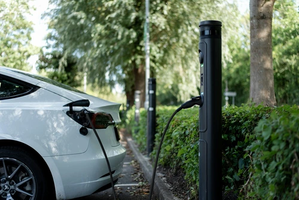
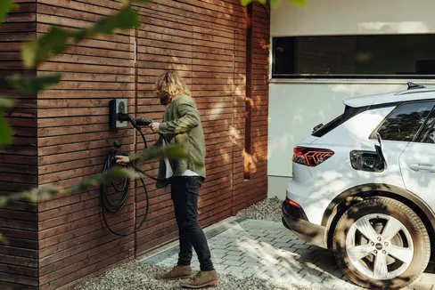

Vi installerer trygge og fremtidsrettede ladeløsninger for elbiler i bolig, borettslag og næring – i henhold til gjeldende krav.
Kontakt ossLading av elbiler representerer en ny belastning i de fleste elektriske anlegg. Nelfo gir råd og veiledning om hvordan ladeløsninger skal installeres trygt og riktig. I NEK 400:2014 finnes en egen delnorm (722) som angir krav til ladeuttak og ladestasjoner for elbiler.

Det er noen spesielle hensyn som må tas ved valg og montasje av ladeuttak for elbiler:
Installasjonen skal være egnet for forutsatt bruk, og det er viktig å avklare hvem som har ansvar for prosjekteringen, spesielt dersom ladeutstyret er levert av andre.
Valg og plassering av ladestasjon må vurderes nøye. Ladestasjonen må tåle mekanisk belastning og klimatiske forhold på stedet.
NEK 400:2014-722 definerer krav til forsyning og uttak for lading av elektriske kjøretøy. Belastningen ved elbillading er ofte langvarig og høy, og derfor stilles det strengere krav til installasjon og beskyttelse.